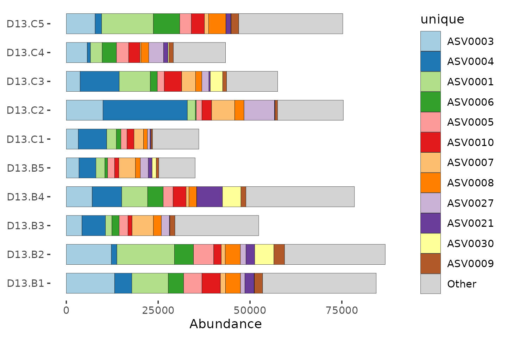
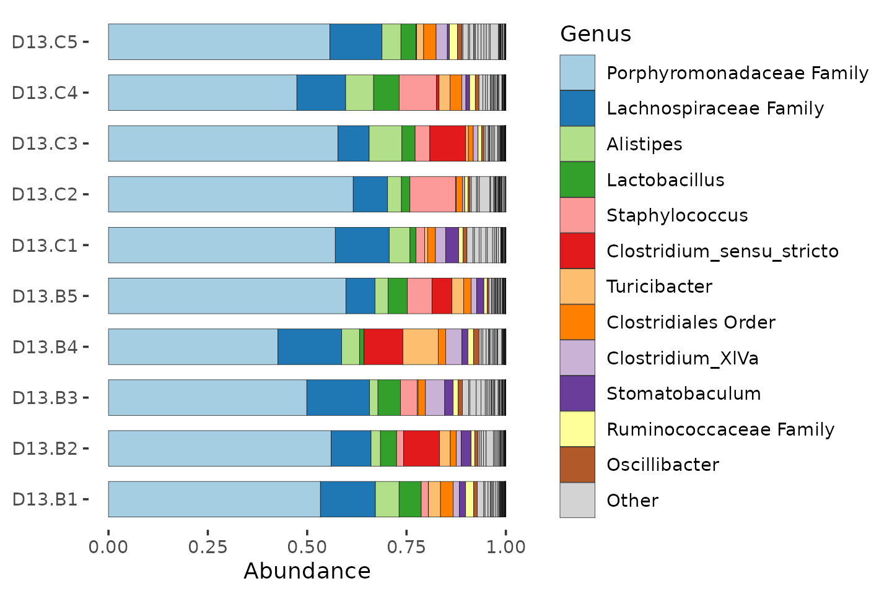
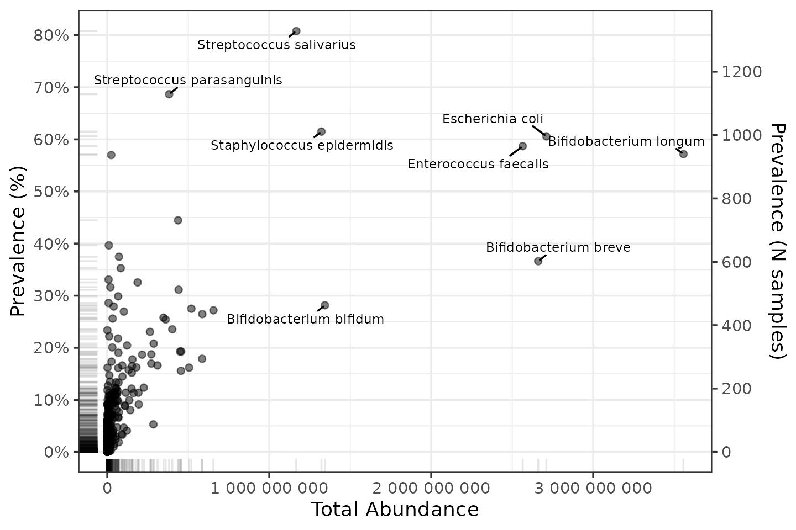
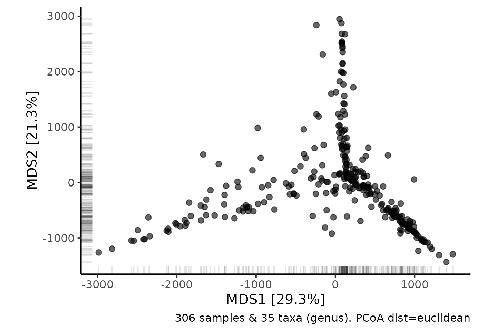
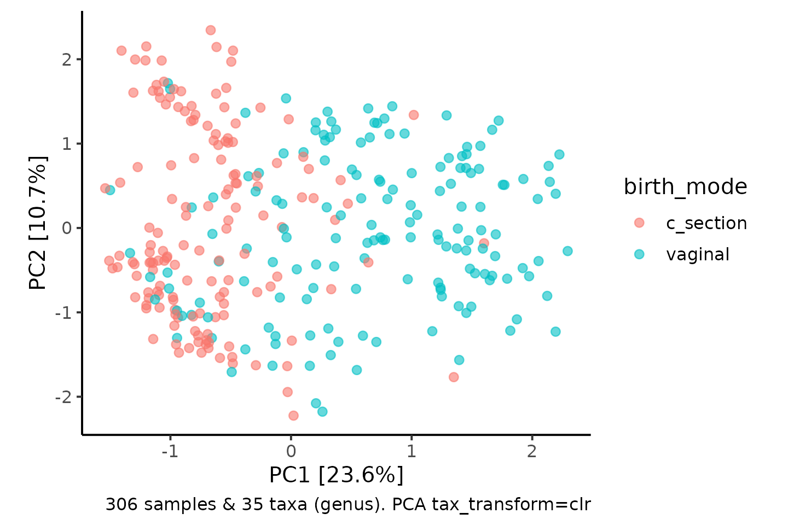
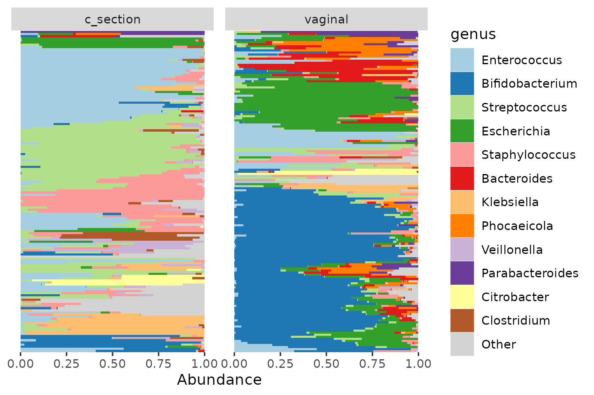

Learn microbiome analysis with microViz
David Barnett
31st May 2022
Source:vignettes/learn/exercises.Rmd
exercises.RmdIntroduction
Overview
These exercises will cover some of the core concepts in microbiome data analysis, using example data. You can follow along by writing code in your own R Markdown notebook (or script).
Part 1 will introduce you to: phyloseq objects for microbiome data; basic bar charts for visualizing microbiome compositions; and alpha diversity indices.
Part 2 will introduce you to: ecological distances and dissimilarity measures; the use of PCoA plots and PERMANOVA; and how/why/when to filter your microbiome data (taxa/samples).
Part 3 will introduce you to: the Euclidean distance; log and CLR transformations; heatmaps for microbiome abundance data; Principal Components Analysis (PCA); and Differential Abundance (DA) testing methods.
Further resources
Refer to the microViz website to see help pages for every function, as well as further tutorials.
The first version of this material was developed as part of the 2022 Evomics workshop on Genomics.
Some accompanying slides are available via the Evomics workshop’s website: http://evomics.org/2022-workshop-on-genomics-cesky-krumlov/
Using your own data?
To apply these methods to your own data, you will first need to create a phyloseq object containing your data. You can process your sequencing data into a count table or biom file using e.g. DADA2 for 16S rRNA gene amplicon sequencing data, or e.g. MetaPhlAn3 for shotgun metagenomic data. Then see the article called “Working with phyloseq objects” for more details on creating phyloseq objects.
Comments or questions?
Something missing or unclear? Spotted a mistake? Let me know on the microViz GitHub discussions page.
Setup
Set R Markdown chunk output options:
knitr::opts_chunk$set(echo = TRUE, fig.width = 6, fig.height = 4, dpi = 120)Load the R packages we will be using:
library(seriation)
library(dplyr)
library(purrr)
library(ggplot2)
library(phyloseq)
library(microViz)
library(shiny)Get the two example datasets:
mice <- readRDS(url("https://github.com/david-barnett/evomics-material/raw/898766166ce151f837b8d668bdc0bf0f859a6dd3/data/mice.rds"))
data("shao19", package = "microViz")We’ll primarily use these two datasets in these exercises, both are data on the gut microbiome. The first is from a study of antibiotic administration in mice, and the second is from a large birth cohort study in human infants.
Each dataset was generated using different sequencing techniques, and different sequence data processing approaches. But the analysis approaches we will learn in these exercises can be readily applied to both methods. The approaches are also appropriate for microbiome data from other environments, not just gut microbiota!
-
miceis 16S rRNA gene amplicon sequencing data, from the mouse antibiotics study- They used Illumina MiSeq and processed the data into ASVs using DADA2
-
shao19is shotgun metagenomic data, from a 2019 study of infants born vaginally or by C-section.- They used Illumina HiSeq and the abundance of species-like features was inferred with metaphlan3.
So the data has already been processed from fastq files into counts per taxon. This is the exciting bit, you get to explore and visualize the data, and do statistics (yay!).
1: Intro & Diversity
This section will introduce you to: phyloseq objects for microbiome data; basic bar charts for visualizing microbiome compositions; and alpha diversity indices.
Intro to phyloseq
This is a phyloseq S4 object, containing processed microbiota data from the mouse study.
Click here for more details about the mice dataset:
The mice data
The data originate from a study on the effects of oral antibiotic administration on flavivirus infection (https://www.ncbi.nlm.nih.gov/pubmed/29590614). Sequence data was generated from extracted nucleic acid from stool samples collected from individually caged mice and amplified using primers specific for the V4 region using primers 515F/806R.
The study followed flavivirus infection after the following treatments:
- Koolaid: Antibiotics are provided to the mice via their drinking water. As many of the antibiotics taste bad, koolaid is added as a sweetener. Therefore, the appropriate control is water spiked and labelled koolaid.
- Ampicillin (Amp): https://en.wikipedia.org/wiki/Ampicillin
- Metronidazole (Met): https://en.wikipedia.org/wiki/Metronidazole
- Ampicillin + Metronidazole (Amp+Metro)
Treatments were supplied ad libitum for 2 weeks prior to viral infection and maintained for 2 weeks post-infection. Primary outcome was mouse survival. Each treatment group had two subgroups of mice that were either a) left uninfected as controls or b) infected with West Nile Virus via a subcutaneous foot pad injection.
Get a little familiar with the object. What does it have in it? Can you look at each part?
The printed object shows you functions you can use to access the data inside.
You can also use the @ symbol.
mice## phyloseq-class experiment-level object
## otu_table() OTU Table: [ 3229 taxa and 520 samples ]
## sample_data() Sample Data: [ 520 samples by 11 sample variables ]
## tax_table() Taxonomy Table: [ 3229 taxa by 7 taxonomic ranks ]
# View(mice)## Taxonomy Table: [6 taxa by 7 taxonomic ranks]:
## Kingdom Phylum Class Order
## ASV0001 "Bacteria" "Bacteroidetes" "Bacteroidia" "Bacteroidales"
## ASV0002 "Bacteria" "Proteobacteria" "Gammaproteobacteria" "Xanthomonadales"
## ASV0003 "Bacteria" "Bacteroidetes" "Bacteroidia" "Bacteroidales"
## ASV0004 "Bacteria" "Bacteroidetes" "Bacteroidia" "Bacteroidales"
## ASV0005 "Bacteria" "Bacteroidetes" "Bacteroidia" "Bacteroidales"
## ASV0006 "Bacteria" "Bacteroidetes" "Bacteroidia" "Bacteroidales"
## Family Genus Species
## ASV0001 "Porphyromonadaceae" NA NA
## ASV0002 "Xanthomonadaceae" "Stenotrophomonas" "maltophilia"
## ASV0003 "Porphyromonadaceae" NA NA
## ASV0004 "Porphyromonadaceae" NA NA
## ASV0005 "Porphyromonadaceae" NA NA
## ASV0006 "Porphyromonadaceae" NA NA
rank_names(mice)## [1] "Kingdom" "Phylum" "Class" "Order" "Family" "Genus" "Species"
otu_table(mice)[1:15, 1:8] ## OTU Table: [8 taxa and 15 samples]
## taxa are columns
## ASV0001 ASV0002 ASV0003 ASV0004 ASV0005 ASV0006 ASV0007 ASV0008
## D14.A1 3343 0 4205 3470 3607 1210 1159 1852
## D14.B5 4332 0 5412 2494 3083 1451 1663 1745
## D0.D5 5344 0 3906 1439 2396 1402 1217 2078
## D0.E1 2994 0 4005 2188 2882 1267 1821 1788
## D0.E2 2315 0 3987 955 1665 1025 899 1342
## D0.E3 1972 0 4336 1876 3422 1208 551 1900
## D0.E4 2352 0 2561 1960 2060 1350 1095 1200
## D0.E5 1386 0 1752 1471 1363 724 1050 871
## D0.F1 3795 0 4052 2226 3130 539 162 247
## D0.F2 2867 0 2063 435 1412 410 0 150
## D0.F3 3850 0 4203 508 2839 533 0 230
## D0.F4 6740 0 5045 1356 5755 517 85 210
## D14.C1 2664 3 2892 1530 2176 735 1508 1577
## D0.F5 5303 3 4203 3313 4471 1241 344 441
## D0.G1 3052 0 3393 3209 2867 873 372 1512
# mice@otu_table[1:15, 1:10] # the same result
sample_variables(mice)## [1] "sample_id" "barcode" "run" "plate"
## [5] "sample" "sex" "cage" "treatment_days"
## [9] "treatment" "virus" "survival_status"
sample_data(mice)[1:15, 1:5]## sample_id barcode run plate sample
## D14.A1 1.Thackray.D14.A1 ACGAGACTGATT 368 1 1
## D14.B5 10.Thackray.D14.B5 ACCGGTATGTAC 368 1 10
## D0.D5 100.Thackray.D0.D5 ATCTACCGAAGC 368 2 100
## D0.E1 101.Thackray.D0.E1 ACTTGGTGTAAG 368 2 101
## D0.E2 102.Thackray.D0.E2 TCTTGGAGGTCA 368 2 102
## D0.E3 103.Thackray.D0.E3 TCACCTCCTTGT 368 2 103
## D0.E4 104.Thackray.D0.E4 GCACACCTGATA 368 2 104
## D0.E5 105.Thackray.D0.E5 GCGACAATTACA 368 2 105
## D0.F1 106.Thackray.D0.F1 TCATGCTCCATT 368 2 106
## D0.F2 107.Thackray.D0.F2 AGCTGTCAAGCT 368 2 107
## D0.F3 108.Thackray.D0.F3 GAGAGCAACAGA 368 2 108
## D0.F4 109.Thackray.D0.F4 TACTCGGGAACT 368 2 109
## D14.C1 11.Thackray.D14.C1 AATTGTGTCGGA 368 1 11
## D0.F5 110.Thackray.D0.F5 CGTGCTTAGGCT 368 2 110
## D0.G1 111.Thackray.D0.G1 TACCGAAGGTAT 368 2 111
sample_names(mice) %>% head(10) ## [1] "D14.A1" "D14.B5" "D0.D5" "D0.E1" "D0.E2" "D0.E3" "D0.E4" "D0.E5"
## [9] "D0.F1" "D0.F2"Looking at microbiome data
Okay, so how do we look at the microbiota abundance data? To do this, we’re going to use the R package microViz
Barcharts: bad to better
Lets take a very small subset of this data to get started. Just the control group (vehicle treatment) at day 13.
# We can filter the samples like this, using the sample_data information
mice %>%
ps_filter(treatment_days == 'D13', virus == 'WNV2000', treatment == 'Vehicle')## phyloseq-class experiment-level object
## otu_table() OTU Table: [ 563 taxa and 10 samples ]
## sample_data() Sample Data: [ 10 samples by 11 sample variables ]
## tax_table() Taxonomy Table: [ 563 taxa by 7 taxonomic ranks ]We will start by naively plotting the raw data, and then make several improvements to make the bar chart more informative.
Bad bars
mice %>%
ps_filter(treatment_days == 'D13', virus == 'WNV2000', treatment == 'Vehicle') %>%
comp_barplot(
tax_level = 'unique', n_taxa = 12, bar_width = 0.7,
sample_order = 'asis', tax_transform_for_plot = 'identity'
) +
coord_flip() ## NAs detected in phyloseq tax_table:
## Consider using tax_fix() to make taxa uniquely identifiable
## NAs detected in phyloseq tax_table:
## Consider using tax_fix() to make taxa uniquely identifiable
What is going on here? The unique taxa have uninformative IDs, and we also got a message about problems with the taxonomy table.
The total number of reads also varies a lot between samples! The total number of reads for each sample is NOT a reliable indicator of the biomass or bacterial load of each sample. So for now we will just consider the relative abundance of each taxon, as proportions of the total counts for that sample.
Compositions (%)
mice %>%
ps_filter(treatment_days == 'D13', virus == 'WNV2000', treatment == 'Vehicle') %>%
comp_barplot(
tax_level = 'unique', n_taxa = 12, sample_order = 'asis', bar_width = 0.7
) +
coord_flip()## NAs detected in phyloseq tax_table:
## Consider using tax_fix() to make taxa uniquely identifiable
## NAs detected in phyloseq tax_table:
## Consider using tax_fix() to make taxa uniquely identifiable
Fixing the tax_table
Let’s look at the taxonomy table interactively:
# tax_fix_interactive(mice) # run this in the R Console for an interactive lookLooks like we just need to fill in some blank cells when a sequence was not classified at genus or family. tax_fix can do this, it just copies down info from a higher rank classification. Let’s update our mice phyloseq object with this fix.
mice <- tax_fix(mice, verbose = FALSE)We can also rename the unique taxa with a more informative name, according to their classification at the rank of Family (and how common they are).
mice %>% taxa_names() %>% head## [1] "ASV0001" "ASV0002" "ASV0003" "ASV0004" "ASV0005" "ASV0006"
mice <- tax_rename(mice, rank = 'Family')
mice %>% taxa_names() %>% head## [1] "Porphyromonadaceae 001" "Xanthomonadaceae 01" "Porphyromonadaceae 002"
## [4] "Porphyromonadaceae 003" "Porphyromonadaceae 004" "Porphyromonadaceae 005"Let’s try again with the better names.
mice %>%
ps_filter(treatment_days == 'D13', virus == 'WNV2000', treatment == 'Vehicle') %>%
comp_barplot(
tax_level = 'unique', n_taxa = 12, sample_order = 'asis', bar_width = 0.7
) +
coord_flip()Sadly we don’t have enough distinct colours to show all the unique taxa.
mice %>%
ps_filter(treatment_days == 'D13', virus == 'WNV2000', treatment == 'Vehicle') %>%
comp_barplot(
tax_level = 'unique', n_taxa = 12, sample_order = 'asis', bar_width = 0.7,
merge_other = FALSE
) +
coord_flip()Aggregating taxa
So let’s “aggregate” all the counts into family-level groups. For each family, this adds together all the counts from every ASV that belongs to that family. We can do that by changing the tax_level argument to “Family”.
mice %>%
ps_filter(treatment_days == 'D13', virus == 'WNV2000', treatment == 'Vehicle') %>%
comp_barplot(
tax_level = "Family", n_taxa = 10, bar_width = 0.7, sample_order = 'asis'
) +
coord_flip()
By aggregating at family level, we have sacrificed taxonomic resolution, compared to using ASVs. But this way we can get an idea of which families are the most abundant, and how variable the communities are.
Try making some similar plots aggregated at different taxonomic ranks.
# rank_names(mice)
# mice %>%
# ps_filter(treatment_days == 'D13', virus == 'WNV2000', treatment == 'Vehicle') %>%
# comp_barplot(tax_level = , n_taxa = 10, sample_order = 'asis', merge_other = FALSE)
mice %>%
ps_filter(treatment_days == 'D13', virus == 'WNV2000', treatment == 'Vehicle') %>%
comp_barplot(
tax_level = "Genus", n_taxa = 12, bar_width = 0.7,
sample_order = 'asis', merge_other = FALSE
) +
coord_flip()
Many of the ASVs in this mice data, the Porphyromonadaceae, could not be classified at genus level.
mice %>%
ps_filter(treatment_days == 'D13', virus == 'WNV2000', treatment == 'Vehicle') %>%
comp_barplot(
tax_level = "Phylum", n_taxa = 7, bar_width = 0.7, sample_order = 'asis'
) +
coord_flip()
Fun with barcharts
More examples/tutorial of visualizing microbiome data using stacked barcharts can be found here: https://david-barnett.github.io/microViz/articles/web-only/compositions.html
Try it out for yourself a bit!
Bar charts often look better when you sort the samples by similarity. The webpage mentions using Bray-Curtis distances and hierarchical clustering to sort samples. We haven’t discussed dissimilarity or distances yet, but we will in the next set of exercises!
For now, just appreciate that it can make the bar charts easier to read!
Alpha diversity
How diverse is the bacterial microbiome of each sample?
Why is this interesting?
Biologically
- Lower gut microbiome diversity is related to worse health in adult humans.
- Higher diversity ecosystems are often considered healthier, more mature, and more resilient to perturbation.
- BUT: diverse == healthy does not hold for all ecosystems, e.g. early infant gut microbiome, so consider your own data and hypotheses carefully.
Richness
The more the merrier. The simplest measure is just counting, aka “Observed Richness”. Let’s compute the observed richness and label each sample with it.
mice %>%
ps_filter(treatment_days == 'D13', virus == 'WNV2000', treatment == 'Vehicle') %>%
ps_calc_richness(rank = 'Genus', index = 'observed', varname = 'N genera') %>%
comp_barplot(
tax_level = "Genus", n_taxa = 12, label = 'N genera', bar_width = 0.7,
sample_order = 'asis', merge_other = FALSE#, tax_transform_for_plot = 'identity'
) +
coord_flip()Diversity
Richness and evenness matter in the calculation of true diversity indices.
mice %>%
ps_filter(treatment_days == 'D13', virus == 'WNV2000', treatment == 'Vehicle') %>%
ps_calc_diversity(rank = 'Genus', index = 'shannon') %>%
ps_mutate(shannon_Genus = round(shannon_Genus, digits = 2)) %>%
comp_barplot(
tax_level = "Genus", n_taxa = 12, label = 'shannon_Genus', bar_width = 0.7,
sample_order = 'asis', merge_other = FALSE
) +
coord_flip()Statistics with alpha diversity
So we have our alpha diversity values for this small subset of mice.
mice %>%
ps_filter(treatment_days == 'D13', virus == 'WNV2000', treatment == 'Vehicle') %>%
ps_calc_diversity(rank = 'Genus', index = 'shannon') %>%
samdat_tbl() %>%
ggplot(aes(x = shannon_Genus, y = "Day 13\ncontrols")) +
geom_point(position = position_jitter(height = 0.2), alpha = 0.5) +
labs(x = 'Shannon diversity (Genus)', y = NULL) +
xlim(1, 2.5) +
theme_bw() 
Let’s calculate alpha diversity for all mice after antibiotic or control treatment, and make a comparison. I suspect that the average gut microbiota diversity of the antibiotic exposed mice will differ from the control group’s at day 3.
# First compute a new variable aggregating all the control mice together
mice <- mice %>%
ps_mutate(antibiotics = treatment %in% c("Amp", "Metro", "AmpMetro"))
mice %>%
ps_filter(treatment_days == 'D13') %>%
ps_calc_diversity(rank = 'Genus', index = 'shannon') %>%
samdat_tbl() %>%
ggplot(aes(y = antibiotics, x = shannon_Genus)) +
geom_boxplot(width = 0.3) +
geom_point(position = position_jitter(height = 0.2), alpha = 0.5) +
theme_bw()
It looks like the antibiotics treated mice have lower gut microbiota diversity on average. A simple statistical test supports this.
mice %>%
ps_filter(treatment_days == 'D13') %>%
ps_calc_diversity(rank = 'Genus', index = 'shannon') %>%
samdat_tbl() %>%
wilcox.test(formula = shannon_Genus ~ antibiotics, data = .)##
## Wilcoxon rank sum test with continuity correction
##
## data: shannon_Genus by antibiotics
## W = 533, p-value = 0.0142
## alternative hypothesis: true location shift is not equal to 0You can apply more complex statistical tests as you like, e.g. adjusting for covariates with linear regression, using lm()
mice %>%
ps_filter(treatment_days == 'D13') %>%
ps_calc_diversity(rank = 'Genus', index = 'shannon') %>%
samdat_tbl() %>%
lm(formula = shannon_Genus ~ antibiotics + virus, data = .) %>%
summary()##
## Call:
## lm(formula = shannon_Genus ~ antibiotics + virus, data = .)
##
## Residuals:
## Min 1Q Median 3Q Max
## -1.34105 -0.20830 0.08928 0.48767 1.25856
##
## Coefficients:
## Estimate Std. Error t value Pr(>|t|)
## (Intercept) 1.5947 0.2036 7.831 7.76e-11 ***
## antibioticsTRUE -0.5445 0.1908 -2.854 0.00587 **
## virusWNV2000 0.3217 0.1742 1.847 0.06956 .
## ---
## Signif. codes: 0 '***' 0.001 '**' 0.01 '*' 0.05 '.' 0.1 ' ' 1
##
## Residual standard error: 0.6479 on 62 degrees of freedom
## Multiple R-squared: 0.1535, Adjusted R-squared: 0.1262
## F-statistic: 5.622 on 2 and 62 DF, p-value: 0.005706Try it out for yourself at other time points? Practice making plots and doing simple statistical tests.
What about richness?
Extension exercises for part 1
Click here for an extension activity with an IBD dataset:
This is an extension exercise, for those who are moving quickly.
Inflammatory Bowel Disease study
ibd <- corncob::ibd_phylo %>%
tax_mutate(Species = NULL) %>% # ibd_phylo Species column was blank -> deleted
ps_mutate(disease = ibd == 'ibd', ibd = NULL) # adds disease state indicator variableibd is another phyloseq object containing 16S rRNA gene amplicon sequencing data, from a 2012 study of Inflammatory Bowel Disease in children and young adults.
It’s “old” data: they used 454 Pyrosequencing, and clustered the raw sequences into “OTUs”.
Have a look at the data, like we did before for the mice dataset.
ibd## phyloseq-class experiment-level object
## otu_table() OTU Table: [ 36349 taxa and 91 samples ]
## sample_data() Sample Data: [ 91 samples by 15 sample variables ]
## tax_table() Taxonomy Table: [ 36349 taxa by 6 taxonomic ranks ]
#You can perform alpha diversity analysis: Try comparing the alpha diversity of the IBD patients against the healthy controls.
#You can also try this stuff out on the Shao 2019 Birth cohort data. Don’t worry if you don’t try this now, as we will look at Shao 2019 dataset in the next part of the lab.
shao19## phyloseq-class experiment-level object
## otu_table() OTU Table: [ 819 taxa and 1644 samples ]
## sample_data() Sample Data: [ 1644 samples by 11 sample variables ]
## tax_table() Taxonomy Table: [ 819 taxa by 6 taxonomic ranks ]
## phy_tree() Phylogenetic Tree: [ 819 tips and 818 internal nodes ]Click here for additional notes on richness and readcount
Additional notes on richness and readcount
Simple approaches like Observed Richness are sensitive to what ecologists call “sampling effort”. For macroecologists, this is actually how much time/effort you spent trying to count all the organisms present in an ecosystem. In our case, the amount of total reads obtained represents the sampling effort: more reads, more effort. Indeed we can see that the samples with a much lower readcount have lower observed richness.
(Furthermore, as this richness estimate is based on a sample, and not the actual ecosystem, the richness estimate actually has quantifiable uncertainty too.)
mice %>%
ps_filter(treatment_days == 'D13', virus == 'WNV2000', treatment == 'Amp') %>%
ps_calc_richness(rank = 'Genus', index = 'observed', varname = 'N genera') %>%
comp_barplot(
tax_level = "Genus", n_taxa = 12, label = 'N genera', bar_width = 0.7,
sample_order = 'asis', merge_other = FALSE, tax_transform_for_plot = 'identity'
)
mice %>%
ps_calc_richness(rank = 'Genus', index = 'observed', varname = 'genera') %>%
ps_mutate(readcount = sample_sums(mice)) %>%
samdat_tbl() %>%
ggplot(aes(readcount, genera)) +
geom_point(alpha = 0.4, size = 2.5) +
theme_bw(14)
What to do:
- Simple solution: Ignore the problem. Whilst you can’t interpret the richness of any individual sample as being correct, it is still usually valid to compare richness across groups of samples, as the readcount variation is only random noise, and should be uncorrelated with your grouping variable (but do check this).
-
Harder solution: Explore more rigorous methods like
breakawayby Amy Willis and team. https://www.frontiersin.org/articles/10.3389/fmicb.2019.02407/full
2: Dissimilarity, ordination, & filtering
This section will introduce you to ecological distances and dissimilarity measures; the use of PCoA plots and PERMANOVA; and how/why/when to filter your microbiome data (taxa/samples).
Part 1 was relatively straightforward, at least conceptually. But there is a lot more interesting stuff we can do with microbiome data.
We’ve looked at one sample at a time and calculated and compared simple summary measures of sample alpha-diversity.
Alpha diversity is sometimes referred to as “within sample” diversity.
Now we’re going to look at “beta diversity”, or “between sample” diversity.
For this part we’re going to swap to another dataset. So you get a little bit more practice examining a phyloseq object. Look at the rank names, sample data variables etc.
shao19 # this object has another part!## phyloseq-class experiment-level object
## otu_table() OTU Table: [ 819 taxa and 1644 samples ]
## sample_data() Sample Data: [ 1644 samples by 11 sample variables ]
## tax_table() Taxonomy Table: [ 819 taxa by 6 taxonomic ranks ]
## phy_tree() Phylogenetic Tree: [ 819 tips and 818 internal nodes ]
#Filtering
First, we need to talk about filtering.
Sample filtering
You should check if any of your samples have a surprisingly low total number of (classified) reads. This can suggest that something went wrong in the lab (or during sample collection) and the data from this sample might be unreliable.
You might already do this check for total reads and remove poor quality samples during the fastq file processing.
shao19 %>%
ps_mutate(reads = sample_sums(shao19)) %>%
samdat_tbl() %>%
ggplot(aes(x = reads)) +
geom_freqpoly(bins = 500) +
geom_rug(alpha = 0.5) +
scale_x_log10(labels = scales::label_number()) +
labs(x = 'Number of classified reads', y = NULL) +
theme_bw()
How many is enough? There is no easy answer.
These samples have great depth. There are a few with much less reads than the rest, and a few with under a million. You might consider dropping the samples with under a million reads, to see if it affects your results, but in this case we won’t.
But 100,000 is still a lot, compared to what older sequencing machines produced: 1000 reads might have been considered very good. So look at the distribution for your data, in case there are obvious outliers, and look at recent papers using a similar sequencing technique for what kind of threshold they used.
There might also be relevant information for the type of sequencer you used on e.g. Illumina website. e.g. for this type of sequencing Illumina suggests you should expect at least a million reads (and this is good for RNA seq analyses). https://support.illumina.com/bulletins/2017/04/considerations-for-rna-seq-read-length-and-coverage-.html
If you are interested, go back and recreate this plot with the 16S sequencing dataset mice.
# mice %>%
# ps_mutate(reads = sample_sums(mice)) %>%
# samdat_tbl() %>%
# ggplot(aes(x = reads)) +
# geom_freqpoly(bins = 30) +
# ... Taxon filtering
Okay, so we might remove “bad” samples, but how can a taxon be “bad”?
We probably want to filter out rare taxa, before performing some kinds of analysis.
Why remove rare taxa?
Rare taxa might sometimes be:
- Sequencing errors
- Statistically problematic
- Biologically irrelevant
How to remove rare taxa?
What is rare? Two main concepts.
- Low prevalence - taxon only detected in a small number of samples in your dataset.
- Low abundance - relatively few reads assigned to that taxon (on average or in total)
Consider the impact of issues 1, 2, and 3. Let’s say we are not interested in unique taxa that occur in fewer than 2% of samples, and they have to have at least 10,000 reads in total across all samples.
# before filtering
ntaxa(shao19)## [1] 819
# after filtering
shao19 %>%
tax_filter(min_prevalence = 2 / 100, min_total_abundance = 10000) %>%
ntaxa()## Proportional min_prevalence given: 0.02 --> min 33/1644 samples.## [1] 253Wow so that would remove most of our unique taxa! What is going on? Let’s make some plots!
# make table of summary statistics for the unique taxa in shao19
shaoTaxaStats <- tibble(
taxon = taxa_names(shao19),
prevalence = microbiome::prevalence(shao19),
total_abundance = taxa_sums(shao19)
)
p <- shaoTaxaStats %>%
ggplot(aes(total_abundance, prevalence)) +
geom_point(alpha = 0.5) +
geom_rug(alpha = 0.1) +
scale_x_continuous(
labels = scales::label_number(), name = "Total Abundance"
) +
scale_y_continuous(
labels = scales::label_percent(), breaks = scales::breaks_pretty(n = 9),
name = "Prevalence (%)",
sec.axis = sec_axis(
trans = ~ . * nsamples(shao19), breaks = scales::breaks_pretty(n = 9),
name = "Prevalence (N samples)"
)
) +
theme_bw()
pSo most taxa have a low prevalence, and handful have way more reads than most.
Let’s label those points to check which taxa are the big time players.
p + ggrepel::geom_text_repel(
data = function(df) filter(df, total_abundance > 1e9 | prevalence > 0.6),
mapping = aes(label = taxon), size = 2.5, min.segment.length = 0, force = 15
)
Those taxa make sense for this dataset of mostly infant gut microbiome samples.
Now let’s zoom in on the less abundant taxa by log-transforming the axes. We’ll also add lines indicating the thresholds of 2% prevalence and 10000 reads abundance.
shaoTaxaStats %>%
ggplot(aes(x = total_abundance, y = prevalence)) +
geom_vline(xintercept = 10000, color = "red", linetype = "dotted") +
geom_hline(yintercept = 2 / 100, color = "red", linetype = "dotted") +
geom_point(alpha = 0.5) +
geom_rug(alpha = 0.1) +
scale_x_log10(labels = scales::label_number(), name = "Total Abundance") +
scale_y_log10(
labels = scales::label_percent(), breaks = scales::breaks_log(n = 9),
name = "Prevalence (%)",
sec.axis = sec_axis(
trans = ~ . * nsamples(shao19), breaks = scales::breaks_log(n = 9),
name = "Prevalence (N samples)"
)
) +
theme_bw()We can break this down by phylum if we add the taxonomic table information.
# don't worry about this code if it's confusing, just focus on the plot output
shao19 %>%
tax_table() %>%
as.data.frame() %>%
as_tibble(rownames = "taxon") %>%
left_join(shaoTaxaStats, by = "taxon") %>%
add_count(phylum, name = "phylum_count", sort = TRUE) %>%
mutate(phylum = factor(phylum, levels = unique(phylum))) %>% # to fix facet order
mutate(phylum = forcats::fct_lump_n(phylum, n = 5)) %>%
mutate(phylum = forcats::fct_explicit_na(phylum, na_level = "Other")) %>%
ggplot(aes(total_abundance, prevalence)) +
geom_vline(xintercept = 10000, color = "red", linetype = "dotted") +
geom_hline(yintercept = 2 / 100, color = "red", linetype = "dotted") +
geom_point(alpha = 0.5, size = 1) +
geom_rug(alpha = 0.2) +
scale_x_log10(
labels = scales::label_log(), breaks = scales::breaks_log(n = 5),
name = "Total Abundance"
) +
scale_y_log10(
labels = scales::label_percent(), breaks = scales::breaks_log(n = 9),
name = "Prevalence (%)",
sec.axis = sec_axis(
trans = ~ . * nsamples(shao19), breaks = scales::breaks_log(n = 9),
name = "Prevalence (N samples)"
)
) +
facet_wrap("phylum") +
theme_bw(10)
How to pick a threshold?
Depends on what analysis method you are filtering for!
- alpha diversity = DO NOT FILTER
- beta diversity = relevance of threshold depends on your distance measure (next topic!)
- differential abundance testing = stringent filtering, prevalence >5%, >10%? (last topic!)
Dissimilarity measures
What are we doing? Calculating the dissimilarity of two samples’ compositions. We talked about these dissimilarity measures in the lecture.
- Binary Jaccard - presence-absence only
- Bray-Curtis - abundance weighted
- UniFrac distances (unweighted, weighted, generalised)
To simplify and speed up the analyses, we’re going to take a smaller part of the dataset. We’ll only look at the 300 infant fecal samples from 4 days of age.
We’re going to filter out rare taxa quite strictly, for similar reasons. But we won’t overwrite our smaller dataset: we’ll do the filtering per analysis.
shao4 %>%
tax_filter(min_prevalence = 2.5 / 100) %>%
tax_agg(rank = "genus") %>%
tax_transform("binary") %>% # converts counts to absence/presence: 0/1
dist_calc(dist = "jaccard")## Proportional min_prevalence given: 0.025 --> min 8/306 samples.## ps_extra object - a list with phyloseq and extras:
##
## phyloseq-class experiment-level object
## otu_table() OTU Table: [ 35 taxa and 306 samples ]
## sample_data() Sample Data: [ 306 samples by 11 sample variables ]
## tax_table() Taxonomy Table: [ 35 taxa by 5 taxonomic ranks ]
##
## ps_extra info:
## tax_agg = genus tax_transform = binary
##
## jaccard distance matrix of size 306
## 0.6666667 0.7333333 0.9375 0.8125 0.6428571 ...
##
## $counts OTU Table: [ 35 taxa and 306 samples ]So we get our pairwise dissimilarities, in a distance matrix attached as an extra part on the original phyloseq object, as part of a container object (a “ps_extra” class object created by microViz, which also stores info about the aggregation and transformations you performed)
distances <- shao4 %>%
tax_filter(min_prevalence = 2.5 / 100, verbose = FALSE) %>%
tax_agg(rank = "genus") %>%
tax_transform("binary") %>%
dist_calc(dist = "jaccard") %>%
dist_get()You can extract the dissimilarities or distances with dist_get.
as.matrix(distances)[1:5, 1:5]## B01089_ba_4 B01190_ba_4 B01194_ba_4 B01196_ba_4 B01235_ba_4
## B01089_ba_4 0.0000000 0.6666667 0.7333333 0.9375000 0.8125000
## B01190_ba_4 0.6666667 0.0000000 0.7500000 0.9166667 0.8461538
## B01194_ba_4 0.7333333 0.7500000 0.0000000 0.4615385 0.3076923
## B01196_ba_4 0.9375000 0.9166667 0.4615385 0.0000000 0.4615385
## B01235_ba_4 0.8125000 0.8461538 0.3076923 0.4615385 0.0000000The Binary Jaccard dissimilarities range between zero (identical) and one (no shared genera).
range(distances)## [1] 0 1Ordination
What can we do with these distances or dissimilarities? We can make an ordination.
Ordination refers to the process of ordering things (in our case: samples), so that similar things (samples) are closer to each other, and dissimilar things (samples) are further away.
PCoA
Principal Co-ordinates Analysis is one kind of ordination.
Takes distance matrix and finds new dimensions (a co-ordinate system if you like). The new dimensions are created with the aim to preserve the original distances between samples, but to capture the majority of this distance information in the first few dimensions. We like this because it makes it easier to visualize the patterns in your data (in 2D or 3D).
There is helpful info about ordination methods including PCoA on the GUide to STatistical Analysis in Microbial Ecology (GUSTA ME) website. https://sites.google.com/site/mb3gustame/dissimilarity-based-methods/principal-coordinates-analysis This website covers a lot of topics, we’ll cover PCoA now, and PCA in the next session. The other topics may be interesting for you to read at a later date if you’ll work on microbiome analysis.
shao4 %>%
tax_filter(min_prevalence = 2.5 / 100, verbose = FALSE) %>%
tax_agg(rank = "genus") %>%
dist_calc(dist = "bray") %>%
ord_calc(method = "PCoA") %>%
ord_plot(alpha = 0.6, size = 2) +
theme_classic(12) +
coord_fixed(0.7)To get a little insight into what has happened here, we can colour each sample according to its dominant (most abundant) genus.
shao4 %>%
tax_filter(min_prevalence = 2.5 / 100, verbose = FALSE) %>%
ps_calc_dominant(rank = "genus", none = "Mixed", other = "Other") %>%
tax_agg(rank = "genus") %>%
dist_calc(dist = "bray") %>%
ord_calc(method = "PCoA") %>%
ord_plot(color = "dominant_genus", alpha = 0.6, size = 2) +
scale_color_brewer(name = "Dominant Genus", palette = "Dark2") +
theme_classic(12) +
coord_fixed(0.7)Interactive ordination!
microViz provides a Shiny app ord_explore to interactively create and explore PCoA plots and other ordinations. See the code below to get started. But read the instructions first.
Here are a few things to try:
- Colour the samples using the variables in the sample data
- Select a few samples to view their composition on barplots!
- Change some ordination options:
- Different rank of taxonomic aggregation
- Different distances we’ve discussed
- Copy the automatically generated code
- Exit the app (press escape or click red button in R console!)
- Paste and run the code to recreate the ordination plot
- Customise the plot: change colour scheme, title, etc.
- Launch the app again with a different subset of the data
- Practice using
ps_filteretc. - e.g. plot the data of the mothers’ gut microbiomes!
- compute one or more alpha diversity measures
- Practice using
Beware:
- UniFrac distances can be quite slow (over a minute) to calculate!
- Filter to fewer samples and fewer taxa to speed it up (Before launching the app)
- There are many distances available, feel free to try out ones we haven’t talked about
- BUT:
- You shouldn’t use a distance that you don’t understand in your actual work, even if the plot looks nice! ;)
- Some of them might not work…
- They are mostly implemented in the package
veganand I haven’t tested them all - Errors will appear in the RStudio R console
- You can report to me any distances that don’t work if you’re feeling helpful!
- They are mostly implemented in the package
- BUT:
- There are other ordination methods available in
ord_explore, which we haven’t discussed- We will discuss PCA and various transformations after dinner!
- Some things we won’t have time to cover, but you can look here for info on topics like constrained ordination –> TODO: insert gusta me ecology website link
# fire up the shiny app
# run these lines in your console (don't keep in script/notebook)
shao4 %>%
tax_filter(min_prevalence = 2.5 / 100, verbose = FALSE) %>%
# calculate new sample variables with dominant taxon (optional)
ps_calc_dominant(rank = "genus", none = "Mixed", other = "Other") %>%
# launch a Shiny app in your web browser!
ord_explore()
# different options
# run this line in your console
shao19 %>%
ps_filter(family_role == "mother") %>%
tax_filter(min_prevalence = 2.5 / 100, verbose = FALSE) %>%
# calculate a few sample variables for interest (optional)
ps_calc_dominant(rank = "genus", none = "Mixed", other = "Other") %>%
ps_calc_diversity(rank = "genus", index = "shannon") %>%
ps_calc_richness(rank = "genus", index = "observed") %>%
# launch a Shiny app in your web browser!
ord_explore()PERMANOVA
Permutational multivariate analysis of variance.
- ANOVA - analysis of variance (statistical modelling approach)
- Multivariate - more than one dependent variable (multiple taxa!)
- Permutational - statistical significance estimates obtained by shuffling the data many times
For more details. See this excellent book chapter by Marti Anderson on PERMANOVA: https://onlinelibrary.wiley.com/doi/full/10.1002/9781118445112.stat07841
Sometimes also called NP-MANOVA (non-parametric MANOVA) e.g. on the GUide to STatistical Analysis in Microbial Ecology website.
TLDR: Are those groups on the PCoA actually different??
shao4 %>%
tax_filter(min_prevalence = 2.5 / 100, verbose = FALSE) %>%
tax_agg(rank = "genus") %>%
dist_calc(dist = "bray") %>%
ord_calc(method = "PCoA") %>%
ord_plot(alpha = 0.6, size = 2, color = "birth_mode") +
theme_classic(12) +
coord_fixed(0.7) +
stat_ellipse(aes(color = birth_mode)) +
scale_color_brewer(palette = "Set1")
shao4 %>%
tax_filter(min_prevalence = 2.5 / 100, verbose = FALSE) %>%
tax_agg(rank = "genus") %>%
dist_calc(dist = "bray") %>%
dist_permanova(variables = "birth_mode", n_perms = 99, seed = 123) %>%
perm_get()## 2022-06-27 19:29:05 - Starting PERMANOVA with 99 perms with 1 processes## 2022-06-27 19:29:05 - Finished PERMANOVA## Permutation test for adonis under NA model
## Marginal effects of terms
## Permutation: free
## Number of permutations: 99
##
## vegan::adonis2(formula = formula, data = metadata, permutations = n_perms, by = by, parallel = parall)
## Df SumOfSqs R2 F Pr(>F)
## birth_mode 1 13.790 0.12366 42.898 0.01 **
## Residual 304 97.727 0.87634
## Total 305 111.518 1.00000
## ---
## Signif. codes: 0 '***' 0.001 '**' 0.01 '*' 0.05 '.' 0.1 ' ' 1
# Use more permutations for a more reliable p.value in your real work (slower)
# Set a random seed number for reproducibility of this stochastic methodYou can see from the model output that the p value, Pr(>F) is below 0.05. So there is good statistical evidence that the bacterial gut microbiota composition of c-section delivered infants has a different composition than vaginally delivered infants at 4 days of age.
You should also report that you used Bray-Curtis dissimilarities, calculated on genera. (after keeping only unique taxa with a prevalence of at least 2.5%!)
It’s probably a good idea to decide on a couple of appropriate distance measures up front for these tests, and report both (at least in supplementary material), as the choice of distance measure can affect results and conclusions!
You can also adjust for covariates in PERMANOVA, and often should, depending on your study design. Let’s fit a more complex model, adjusting for infant sex, birth weight, and the total number of assigned reads.
shao4 %>%
tax_filter(min_prevalence = 2.5 / 100, verbose = FALSE) %>%
tax_agg(rank = "genus") %>%
dist_calc(dist = "bray") %>%
dist_permanova(
variables = c("birth_mode", "sex", "birth_weight", "number_reads"),
n_perms = 99, seed = 111
) %>%
perm_get()## Dropping samples with missings: 15## 2022-06-27 19:29:06 - Starting PERMANOVA with 99 perms with 1 processes## 2022-06-27 19:29:07 - Finished PERMANOVA## Permutation test for adonis under reduced model
## Marginal effects of terms
## Permutation: free
## Number of permutations: 99
##
## vegan::adonis2(formula = formula, data = metadata, permutations = n_perms, by = by, parallel = parall)
## Df SumOfSqs R2 F Pr(>F)
## birth_mode 1 10.794 0.10163 34.8045 0.01 **
## sex 1 0.280 0.00264 0.9031 0.43
## birth_weight 1 0.565 0.00532 1.8215 0.06 .
## number_reads 1 2.873 0.02705 9.2656 0.01 **
## Residual 286 88.696 0.83509
## Total 290 106.211 1.00000
## ---
## Signif. codes: 0 '***' 0.001 '**' 0.01 '*' 0.05 '.' 0.1 ' ' 1
# Use more permutations for a more reliable p.value in your real work (slower)
# Set a random seed number for reproducibility of this stochastic method3: Transformations, PCA & DA
This section will introduce you to: the Euclidean distance; log and CLR transformations; heatmaps for microbiome abundance data; Principal Components Analysis (PCA); and Differential Abundance (DA) testing methods.
Euclidean distances
What about Euclidean distances? What are those?
Euclidean distances are essentially a generalization of Pythagoras’ theorem to more dimensions. In our data every taxon is a feature, a dimension, on which we calculate Euclidean distances.
Pythagoras: \(c = \sqrt{a^2 + b^2}\)
Euclidean distance:
\[d\left(p, q\right) = \sqrt{\sum _{i=1}^{n_{taxa}} \left( p_{i}-q_{i}\right)^2 }\]
Issues
- Sensitive to sparsity (double-zero problem) –> filter rare taxa
- Excessive emphasis on high-abundance taxa –> transform features first
- The PCoA looks weird! most samples bunched in the middle with spindly projections..
shao4 %>%
tax_filter(min_prevalence = 2.5 / 100, verbose = FALSE) %>%
tax_agg(rank = "genus") %>%
dist_calc(dist = "euclidean") %>%
ord_calc(method = "PCoA") %>%
ord_plot(alpha = 0.6, size = 2) +
theme_classic(12) +
coord_fixed(0.7) +
geom_rug(alpha = 0.1)
Abundance transformation
We already did two transformations with tax_transform(): binary (for Binary Jaccard distances) and compositional (for barplots).
Now we need log transformations, and the centered-log-ratio, CLR, transformation.
Log transformations
First let’s look at the abundance again, this time with heatmaps.
# Getting the taxa in abundance order up front
# to keep it consistent across multiple plots
shao4_sorted <- shao4 %>%
tax_sort(by = sum, at = "genus", trans = "compositional", tree_warn = FALSE)Each column is a sample (from an infant), and each row is a taxon.
shao4_sorted %>%
tax_transform(trans = "identity", rank = "genus") %>%
comp_heatmap(
samples = 1:20, taxa = 1:20, grid_lwd = 2, name = "Counts",
tax_seriation = "Identity", sample_seriation = "Identity"
)
shao4_sorted %>%
tax_transform(trans = "compositional", rank = "genus") %>%
comp_heatmap(
samples = 1:20, taxa = 1:20, grid_lwd = 2, name = "Prop.",
tax_seriation = "Identity", sample_seriation = "Identity"
)
We can add the proportions on this small subset of data as numbers.
shao4_sorted %>%
tax_transform(trans = "compositional", rank = "genus") %>%
comp_heatmap(
numbers = heat_numbers(fmt = "%.1f"), numbers_use_counts = FALSE,
samples = 1:20, taxa = 1:20, grid_lwd = 2, name = "Prop.",
tax_seriation = "Identity", sample_seriation = "Identity"
)
Even though we have picked the top 20 most abundant genera, there are still a lot of zeros, We need to deal with the zeros, because log(0) is undefined. The solution is to add a small amount to every value (or just every zero), before applying the log transformation. This small value is often called a pseudo-count.
What value should we use for the pseudo-count?
One option is to just add 1, and another popular option is to add half of the smallest observed real value (from across the whole dataset).
shao4_sorted %>%
tax_transform(rank = "genus", trans = "log10", zero_replace = 1) %>%
comp_heatmap(
samples = 1:20, taxa = 1:20, grid_lwd = 2, name = "log10\n(x+1)",
tax_seriation = "Identity", sample_seriation = "Identity"
)
shao4_sorted %>%
tax_agg(rank = "genus") %>%
# tax_transform(trans = 'compositional') %>% # compositional also possible
tax_transform(trans = "log10", zero_replace = "halfmin", chain = TRUE) %>%
comp_heatmap(
samples = 1:20, taxa = 1:20, grid_lwd = 2, name = "log10\nhalfmin",
tax_seriation = "Identity", sample_seriation = "Identity"
)In general, for zero replacement, keep it simple and record your approach.
Centered Log Ratio transformation:
Compositionality problem is improved by the centered-log-ratio transformation.
The centered log-ratio (clr) transformation uses the geometric mean of the sample vector as the reference.
shao4_sorted %>%
tax_agg(rank = "genus") %>%
# tax_transform(trans = 'compositional') %>% # compositional also possible
tax_transform(trans = "clr", zero_replace = "halfmin", chain = TRUE) %>%
comp_heatmap(
samples = 1:20, taxa = 1:20, grid_lwd = 2, name = "CLR\nhalfmin",
colors = heat_palette(sym = TRUE),
tax_seriation = "Identity", sample_seriation = "Identity"
)
Overview of CoDa problem.
The sequencing data gives us relative abundances, not absolute abundances. The total number of reads sequenced per sample is an arbitrary total.
If one taxon blooms, whilst everything else stays stable, the relative abundance of all other taxa must (appear to) go down.
This leads to two main types of problem:
- interpretation caveats: see differential abundance section later
- statistical issues: taxon abundances are not independent, but (weakly?) negatively correlated
This is worse with simpler ecosystems. There is the same problem in theory with RNAseq data, but I suspect it is less bothersome because there are many more competing “species” of RNA transcript than there are bacterial species in even a very complex microbiome.
The centered-log-ratio transformation (along with some other similar ratio transformations) are claimed to help with the statistical issues by transforming the abundances from the simplex to the real space.
Practically, the CLR transformation involves finding the geometric mean of each sample, and then dividing abundance of each taxon in that sample by this geometric mean. Finally you take the natural log of this ratio.
For more details, check out Gloor 2017. Microbiome Datasets are Compositional: and this is not optional
Fun with Heatmaps
Heatmaps look much better when you sort the rows by similarity (using distances and hierarchical clustering!).
More examples/tutorial of visualizing microbiome data using heatmaps can be found here:
https://david-barnett.github.io/microViz/articles/web-only/heatmaps.html
#PCA
Principal Components Analysis.
Quite similar to Principal Co-ordinates Analysis.
In fact, PCA produces equivalent results to PCoA with euclidean distances. So let’s perform the CLR-transform first and check PCA and euclidean PCoA are the same.
shao4 %>%
tax_filter(min_prevalence = 2.5 / 100, verbose = FALSE) %>%
tax_transform(rank = "genus", trans = "clr", zero_replace = "halfmin") %>%
dist_calc(dist = "euclidean") %>%
ord_calc(method = "PCoA") %>%
ord_plot(alpha = 0.6, size = 2, color = "birth_mode") +
theme_classic(12) +
coord_fixed(0.7) +
scale_y_reverse()
shao4 %>%
tax_filter(min_prevalence = 2.5 / 100, verbose = FALSE) %>%
tax_transform(rank = "genus", trans = "clr", zero_replace = "halfmin") %>%
ord_calc(method = "PCA") %>%
ord_plot(alpha = 0.6, size = 2, color = "birth_mode") +
theme_classic(12) +
coord_fixed(0.7)
So why is PCA interesting for us? Because the Principal components are built directly from a (linear) combination of the original features.
That means we know how much each taxon contributes to each PC axis, and we can plot this information (loadings) as arrows, alongside the sample points.
pca <- shao4 %>%
tax_filter(min_prevalence = 2.5 / 100, verbose = FALSE) %>%
tax_transform(rank = "genus", trans = "clr", zero_replace = "halfmin") %>%
ord_calc(method = "PCA") %>%
ord_plot(
alpha = 0.6, size = 2, color = "birth_mode",
plot_taxa = 1:6, tax_vec_length = 0.275,
tax_lab_style = tax_lab_style(
type = "text", max_angle = 90, aspect_ratio = 0.7,
size = 3, fontface = "bold"
),
) +
theme_classic(12) +
coord_fixed(0.7, clip = "off")
pca
How to interpret the taxa loading vectors? Cautiously.
There are caveats and nuance to the interpretation of these plots, which are called PCA bi-plots, and you can read more about here: https://sites.google.com/site/mb3gustame/indirect-gradient-analysis/pca
The relative length and direction of an arrow indicates how much that taxon contributes to the variation on each visible PC axis, e.g. Variation in Enterococcus contributes quite a lot to variation along the PC2 axis.
This allows you to infer that samples positioned at the bottom of the plot will tend to have higher relative abundance of Enterococcus than samples at the top of the plot.
Interestingly, samples on the right of the plot (which tend to be vaginally-delivered infants) seem to have relatively more Bifidobacterium, Bacteroides and Escherichia, whilst the C-section born infants have relatively more Veillonella.
(Side note, Phocaeicola were considered part of Bacteroides until this year!)
You might have already noticed this pattern, when exploring and making barplots interactively with ord_explore earlier.
Iris plot
We can make another kind of barplot now, using the PCA information to order our samples in a circular layout.
iris <- shao4 %>%
tax_filter(min_prevalence = 2.5 / 100, verbose = FALSE) %>%
tax_transform(rank = "genus", trans = "clr", zero_replace = "halfmin") %>%
ord_calc(method = "PCA") %>%
ord_plot_iris(
tax_level = "genus", n_taxa = 12, other = "Other",
anno_colour = "birth_mode",
anno_colour_style = list(alpha = 0.6, size = 0.6, show.legend = FALSE)
)
iris
patchwork::wrap_plots(pca, iris, nrow = 1, guides = "collect")
Taxon stats
From the PCA loadings and barplots above, we have some strong suspicions about which taxa have a higher relative abundance in vaginally delivered infants than in c-section delivered infants, and vice versa, but we can also statistically test this. This is often called “differential abundance” (DA) testing, in the style of “differential expression” (DE) testing from the transcriptomics field.
shao4 %>%
comp_barplot(
tax_level = "genus", n_taxa = 12, facet_by = "birth_mode",
label = NULL, bar_outline_colour = NA
) +
coord_flip() +
theme(axis.ticks.y = element_blank())
Model one taxon
We will start by creating a linear regression model for one genus, Bacteroides. We will transform the count data by first making it proportions, and then taking the binary logarithm, log2, after adding a pseudocount.
bacteroidesRegression1 <- shao4 %>%
tax_transform("compositional", rank = "genus") %>%
tax_transform("log2", zero_replace = "halfmin", chain = TRUE) %>%
tax_model(type = "lm", rank = "genus", taxa = "Bacteroides", variables = "birth_mode") %>%
pluck(1)## Modelling: Bacteroides
# looking at the regression results
summary(bacteroidesRegression1)##
## Call:
## Bacteroides ~ birth_mode
##
## Residuals:
## Min 1Q Median 3Q Max
## -7.7492 -0.6172 -0.6172 2.6421 18.0804
##
## Coefficients:
## Estimate Std. Error t value Pr(>|t|)
## (Intercept) -19.3756 0.4863 -39.84 <2e-16 ***
## birth_modevaginal 7.1320 0.6812 10.47 <2e-16 ***
## ---
## Signif. codes: 0 '***' 0.001 '**' 0.01 '*' 0.05 '.' 0.1 ' ' 1
##
## Residual standard error: 5.957 on 304 degrees of freedom
## Multiple R-squared: 0.265, Adjusted R-squared: 0.2626
## F-statistic: 109.6 on 1 and 304 DF, p-value: < 2.2e-16
confint(bacteroidesRegression1)## 2.5 % 97.5 %
## (Intercept) -20.332614 -18.418542
## birth_modevaginal 5.791662 8.472414
broom::tidy(bacteroidesRegression1, conf.int = TRUE)## # A tibble: 2 × 7
## term estimate std.error statistic p.value conf.low conf.high
## <chr> <dbl> <dbl> <dbl> <dbl> <dbl> <dbl>
## 1 (Intercept) -19.4 0.486 -39.8 1.08e-122 -20.3 -18.4
## 2 birth_modevaginal 7.13 0.681 10.5 4.13e- 22 5.79 8.47Click here for optional ggplot2 extension exercise:
ggplot2 extension exercise:Starting from a dataframe like the one produced by the code below, plot:
- Easy: The percentage prevalence of Bacteroides in each birth_mode group
- Medium: The distribution of relative abundance of Bacteroides in each birth_mode group, omitting zeros, on a log2 scale
- Hard: Do task 1 or 2 for for several taxa in one plot - (hint:
pivot_longer)
shao4 %>%
tax_transform("compositional", rank = "genus") %>%
ps_get() %>%
ps_otu2samdat(taxa = "Bacteroides") %>%
samdat_tbl()We can fit a model with covariates, as we did for PERMANOVA. We are going to convert the categorical variables into indicator (dummy) variables, and scale the continuous covariates to 0 mean and SD 1 (z-scores). You’ll see this will make our subsequent plots easier to interpret later.
shao4 <- shao4 %>%
ps_mutate(
C_section = if_else(birth_mode == "c_section", true = 1, false = 0),
Female = if_else(sex == "female", true = 1, false = 0),
Birth_weight_Z = scale(birth_weight, center = TRUE, scale = TRUE),
Reads_Z = scale(number_reads, center = TRUE, scale = TRUE)
)
bacteroidesRegression2 <- shao4 %>%
tax_transform("compositional", rank = "genus") %>%
tax_transform("log2", zero_replace = "halfmin", chain = TRUE) %>%
tax_model(
type = "lm", rank = "genus", taxa = "Bacteroides",
variables = c("C_section", "Female", "Birth_weight_Z", "Reads_Z")
) %>%
pluck(1)## Modelling: Bacteroides
# looking at the regression results
summary(bacteroidesRegression2)##
## Call:
## Bacteroides ~ C_section + Female + Birth_weight_Z + Reads_Z
##
## Residuals:
## Min 1Q Median 3Q Max
## -9.4271 -2.1555 -0.4115 2.8176 18.1784
##
## Coefficients:
## Estimate Std. Error t value Pr(>|t|)
## (Intercept) -11.7942 0.6103 -19.325 <2e-16 ***
## C_section -7.5696 0.7206 -10.505 <2e-16 ***
## Female -0.3809 0.7101 -0.536 0.592
## Birth_weight_Z 0.3277 0.3514 0.932 0.352
## Reads_Z 0.5361 0.3620 1.481 0.140
## ---
## Signif. codes: 0 '***' 0.001 '**' 0.01 '*' 0.05 '.' 0.1 ' ' 1
##
## Residual standard error: 5.934 on 286 degrees of freedom
## (15 observations deleted due to missingness)
## Multiple R-squared: 0.2854, Adjusted R-squared: 0.2754
## F-statistic: 28.55 on 4 and 286 DF, p-value: < 2.2e-16
broom::tidy(bacteroidesRegression2, conf.int = TRUE)## # A tibble: 5 × 7
## term estimate std.error statistic p.value conf.low conf.high
## <chr> <dbl> <dbl> <dbl> <dbl> <dbl> <dbl>
## 1 (Intercept) -11.8 0.610 -19.3 8.15e-54 -13.0 -10.6
## 2 C_section -7.57 0.721 -10.5 4.81e-22 -8.99 -6.15
## 3 Female -0.381 0.710 -0.536 5.92e- 1 -1.78 1.02
## 4 Birth_weight_Z 0.328 0.351 0.932 3.52e- 1 -0.364 1.02
## 5 Reads_Z 0.536 0.362 1.48 1.40e- 1 -0.176 1.25Many DA methods
This method is what MaAsLin2 does by default (except they call the compositional transformation “Total Sum Scaling (TSS)”). This is quite a straightforward method, so we will stick with this for today, but many statistical methods have been developed for differential abundance analyses.
Microbiome abundance data are quite awkward, statistically speaking, due to their sparseness and compositionality. Each successive method claims to handle some aspect of this awkwardness “better” than previous methods.
The aim is to have a method with adequate power to detect true associations, whilst controlling the type 1 error rate, the “false positive” reporting of associations that are not “truly” present.
Results are surprisingly inconsistent across the different methods, as demonstrated this year in a fascinating analysis by Jacob Nearing and colleagues.
What to do?
- Filter out the noise & interpret results with caution! use multiple testing corrections
- Remember it’s all relative (abundance)
- Try multiple methods and/or use same method as previous study if replicating
- Avoid Lefse and edgeR?
- Beware: Not all methods allow covariate adjustment & few allow random effects (for time-series)
Model all the taxa!
We’re not normally interested in just one taxon! And often it’s also hard to decide which taxonomic rank we are most interested in modelling!
Lower ranks like species or ASVs give better resolution but also more sparsity and classification uncertainty… Higher ranks e.g. classes, could also be more powerful if you think most taxa within that class will follow a similar pattern.
So now we will fit a similar model for almost* every taxon at every rank we have available, from phylum down to species.
*We’ll actually filter out species with a prevalence of less than 10%.
# The code for `taxatree_models` is quite similar to tax_model.
# However, you might need to run `tax_prepend_ranks` to ensure that each taxon at each rank is always unique.
shaoModels <- shao4 %>%
tax_prepend_ranks() %>%
tax_transform("compositional", rank = "species", keep_counts = TRUE) %>%
tax_filter(min_prevalence = 0.1, undetected = 0, use_counts = TRUE) %>%
tax_transform(trans = "log2", chain = TRUE, zero_replace = "halfmin") %>%
taxatree_models(
type = lm,
ranks = c("phylum", "class", "order", "family", "genus", "species"),
variables = c('C_section', 'Female', 'Birth_weight_Z', 'Reads_Z')
)## Proportional min_prevalence given: 0.1 --> min 31/306 samples.## 2022-06-27 19:29:51 - modelling at rank: phylum## 2022-06-27 19:29:51 - modelling at rank: class## 2022-06-27 19:29:51 - modelling at rank: order## 2022-06-27 19:29:52 - modelling at rank: family## 2022-06-27 19:29:52 - modelling at rank: genus## 2022-06-27 19:29:53 - modelling at rank: species
shaoModels## ps_extra object - a list with phyloseq and extras:
##
## phyloseq-class experiment-level object
## otu_table() OTU Table: [ 39 taxa and 306 samples ]
## sample_data() Sample Data: [ 306 samples by 15 sample variables ]
## tax_table() Taxonomy Table: [ 39 taxa by 6 taxonomic ranks ]
##
## ps_extra info:
## tax_agg = species tax_transform = compositional&log2
##
## $counts OTU Table: [ 39 taxa and 306 samples ]
##
## $taxatree_models list:
## Ranks: phylum/class/order/family/genus/speciesWhy filter the taxa? It’s less likely that we are interested in rare taxa, and models of rare taxon abundances are more likely to be unreliable. Reducing the the number of taxa modelled also makes the process faster and makes visualizing the results easier!
Getting stats from the models
Next we will get a data.frame containing the regression coefficient estimates, test statistics and corresponding p values from all these regression models.
shaoStats <- taxatree_models2stats(shaoModels)
shaoStats## ps_extra object - a list with phyloseq and extras:
##
## phyloseq-class experiment-level object
## otu_table() OTU Table: [ 39 taxa and 306 samples ]
## sample_data() Sample Data: [ 306 samples by 15 sample variables ]
## tax_table() Taxonomy Table: [ 39 taxa by 6 taxonomic ranks ]
##
## ps_extra info:
## tax_agg = species tax_transform = compositional&log2
##
## $counts OTU Table: [ 39 taxa and 306 samples ]
##
## $taxatree_stats dataframe:
## 86 taxa at 6 ranks: phylum, class, order, family, genus, species
## 4 terms: C_section, Female, Birth_weight_Z, Reads_Z
shaoStats$taxatree_stats## # A tibble: 344 × 7
## term taxon rank estimate std.error statistic p.value
## <fct> <chr> <fct> <dbl> <dbl> <dbl> <dbl>
## 1 C_section p: Proteobacteria phylum -3.44 1.31 -2.62 9.23e- 3
## 2 Female p: Proteobacteria phylum 0.595 1.29 0.460 6.46e- 1
## 3 Birth_weight_Z p: Proteobacteria phylum 0.0179 0.640 0.0279 9.78e- 1
## 4 Reads_Z p: Proteobacteria phylum -1.22 0.659 -1.86 6.44e- 2
## 5 C_section p: Actinobacteria phylum -16.9 2.37 -7.12 8.98e-12
## 6 Female p: Actinobacteria phylum -2.80 2.33 -1.20 2.30e- 1
## 7 Birth_weight_Z p: Actinobacteria phylum 1.65 1.15 1.43 1.55e- 1
## 8 Reads_Z p: Actinobacteria phylum -2.86 1.19 -2.41 1.67e- 2
## 9 C_section p: Firmicutes phylum 15.3 4.21 3.62 3.43e- 4
## 10 Female p: Firmicutes phylum 0.741 4.15 0.179 8.58e- 1
## # … with 334 more rowsAdjusting p values
As we have performed a lot of statistical tests here, it is quite possible that could we find some significant p-values by chance alone.
So we should correct for multiple testing / control the false discovery rate or family-wise error rate.
Instead of applying these adjustment methods across all 86 taxa models at all ranks, the default behaviour is to control the family-wise error rate per taxonomic rank.
shaoStats <- shaoStats %>% taxatree_stats_p_adjust(method = "BH", grouping = "rank")
# notice the new variable
shaoStats$taxatree_stats## # A tibble: 344 × 8
## # Groups: rank [6]
## term taxon rank estimate std.error statistic p.value p.adj.BH.rank
## <fct> <chr> <fct> <dbl> <dbl> <dbl> <dbl> <dbl>
## 1 C_section p: P… phyl… -3.44 1.31 -2.62 9.23e- 3 2.95e- 2
## 2 Female p: P… phyl… 0.595 1.29 0.460 6.46e- 1 7.38e- 1
## 3 Birth_weight… p: P… phyl… 0.0179 0.640 0.0279 9.78e- 1 9.78e- 1
## 4 Reads_Z p: P… phyl… -1.22 0.659 -1.86 6.44e- 2 1.47e- 1
## 5 C_section p: A… phyl… -16.9 2.37 -7.12 8.98e-12 7.19e-11
## 6 Female p: A… phyl… -2.80 2.33 -1.20 2.30e- 1 3.07e- 1
## 7 Birth_weight… p: A… phyl… 1.65 1.15 1.43 1.55e- 1 2.48e- 1
## 8 Reads_Z p: A… phyl… -2.86 1.19 -2.41 1.67e- 2 4.46e- 2
## 9 C_section p: F… phyl… 15.3 4.21 3.62 3.43e- 4 1.83e- 3
## 10 Female p: F… phyl… 0.741 4.15 0.179 8.58e- 1 9.16e- 1
## # … with 334 more rowsPlot all the taxatree_stats!
taxatree_plots() allows you to plot statistics (e.g. point estimates and significance) from all of the taxa models onto a tree layout. The taxon models are organised by rank, radiating out from the central root node from e.g. Phyla around the center to Species in the outermost ring.
taxatree_plots() itself returns a list of plots, which you can arrange into one figure with the patchwork package for example (and/or cowplot).
shaoStats %>%
taxatree_plots(node_size_range = c(1, 3), sig_stat = 'p.adj.BH.rank') %>%
patchwork::wrap_plots(ncol = 2, guides = "collect")
Taxatree Key
But how do we know which taxa are which nodes? We can create a labelled grey tree with taxatree_plotkey(). This labels only some of the taxa based on certain conditions that we specify.
set.seed(123) # label position
key <- shaoStats %>%
taxatree_plotkey(
taxon_renamer = function(x) stringr::str_remove(x, "[pfg]: "),
# conditions below, for filtering taxa to be labelled
rank == "phylum" | rank == "genus" & prevalence > 0.2
# all phyla are labelled, and all genera with a prevalence of over 0.2
)
key
You can do more with these trees to customise them to your liking. See an extended tutorial here on the microViz website: including how to directly label taxa on the colored plots, change the layout and style of the trees, and even how to use a different regression modelling approach.
# try it out!Session info
session_info records your package versions etc. This is useful for debugging / reproducing analysis.
devtools::session_info()## ─ Session info ───────────────────────────────────────────────────────────────
## setting value
## version R version 4.2.0 (2022-04-22)
## os Ubuntu 20.04.4 LTS
## system x86_64, linux-gnu
## ui X11
## language en
## collate C.UTF-8
## ctype C.UTF-8
## tz UTC
## date 2022-06-27
## pandoc 2.14.2 @ /usr/bin/ (via rmarkdown)
##
## ─ Packages ───────────────────────────────────────────────────────────────────
## package * version date (UTC) lib source
## ade4 1.7-19 2022-04-19 [1] RSPM
## ape 5.6-2 2022-03-02 [1] RSPM
## backports 1.4.1 2021-12-13 [1] RSPM
## Biobase 2.56.0 2022-04-26 [1] Bioconductor
## BiocGenerics 0.42.0 2022-04-26 [1] Bioconductor
## biomformat 1.24.0 2022-04-26 [1] Bioconductor
## Biostrings 2.64.0 2022-04-26 [1] Bioconductor
## bitops 1.0-7 2021-04-24 [1] RSPM
## brio 1.1.3 2021-11-30 [1] RSPM
## broom 0.8.0 2022-04-13 [1] RSPM
## bslib 0.3.1 2021-10-06 [1] RSPM
## cachem 1.0.6 2021-08-19 [1] RSPM
## callr 3.7.0 2021-04-20 [1] RSPM
## circlize 0.4.15 2022-05-10 [1] RSPM
## cli 3.3.0 2022-04-25 [1] RSPM
## clue 0.3-61 2022-05-30 [1] RSPM
## cluster 2.1.3 2022-03-28 [2] CRAN (R 4.2.0)
## codetools 0.2-18 2020-11-04 [2] CRAN (R 4.2.0)
## colorspace 2.0-3 2022-02-21 [1] RSPM
## ComplexHeatmap 2.12.0 2022-04-26 [1] Bioconductor
## corncob 0.2.0 2021-03-11 [1] RSPM
## crayon 1.5.1 2022-03-26 [1] RSPM
## data.table 1.14.2 2021-09-27 [1] RSPM
## desc 1.4.1 2022-03-06 [1] RSPM
## devtools 2.4.3 2021-11-30 [1] RSPM
## digest 0.6.29 2021-12-01 [1] RSPM
## doParallel 1.0.17 2022-02-07 [1] RSPM
## dplyr * 1.0.9 2022-04-28 [1] RSPM
## ellipsis 0.3.2 2021-04-29 [1] RSPM
## evaluate 0.15 2022-02-18 [1] RSPM
## fansi 1.0.3 2022-03-24 [1] RSPM
## farver 2.1.0 2021-02-28 [1] RSPM
## fastmap 1.1.0 2021-01-25 [1] RSPM
## forcats 0.5.1 2021-01-27 [1] RSPM
## foreach 1.5.2 2022-02-02 [1] RSPM
## fs 1.5.2 2021-12-08 [1] RSPM
## future 1.26.1 2022-05-27 [1] RSPM
## future.apply 1.9.0 2022-04-25 [1] RSPM
## generics 0.1.2 2022-01-31 [1] RSPM
## GenomeInfoDb 1.32.2 2022-05-15 [1] Bioconductor
## GenomeInfoDbData 1.2.8 2022-06-24 [1] Bioconductor
## GetoptLong 1.0.5 2020-12-15 [1] RSPM
## ggforce 0.3.3 2021-03-05 [1] RSPM
## ggplot2 * 3.3.6 2022-05-03 [1] RSPM
## ggraph 2.0.5 2021-02-23 [1] RSPM
## ggrepel 0.9.1 2021-01-15 [1] RSPM
## GlobalOptions 0.1.2 2020-06-10 [1] RSPM
## globals 0.15.1 2022-06-24 [1] RSPM
## glue 1.6.2 2022-02-24 [1] RSPM
## graphlayouts 0.8.0 2022-01-03 [1] RSPM
## gridExtra 2.3 2017-09-09 [1] RSPM
## gtable 0.3.0 2019-03-25 [1] RSPM
## highr 0.9 2021-04-16 [1] RSPM
## htmltools 0.5.2 2021-08-25 [1] RSPM
## httpuv 1.6.5 2022-01-05 [1] RSPM
## igraph 1.3.2 2022-06-13 [1] RSPM
## IRanges 2.30.0 2022-04-26 [1] Bioconductor
## iterators 1.0.14 2022-02-05 [1] RSPM
## jquerylib 0.1.4 2021-04-26 [1] RSPM
## jsonlite 1.8.0 2022-02-22 [1] RSPM
## knitr 1.39 2022-04-26 [1] RSPM
## labeling 0.4.2 2020-10-20 [1] RSPM
## later 1.3.0 2021-08-18 [1] RSPM
## lattice 0.20-45 2021-09-22 [2] CRAN (R 4.2.0)
## lifecycle 1.0.1 2021-09-24 [1] RSPM
## listenv 0.8.0 2019-12-05 [1] RSPM
## magrittr 2.0.3 2022-03-30 [1] RSPM
## MASS 7.3-56 2022-03-23 [2] CRAN (R 4.2.0)
## Matrix 1.4-1 2022-03-23 [2] CRAN (R 4.2.0)
## matrixStats 0.62.0 2022-04-19 [1] RSPM
## memoise 2.0.1 2021-11-26 [1] RSPM
## mgcv 1.8-40 2022-03-29 [2] CRAN (R 4.2.0)
## microbiome 1.18.0 2022-04-26 [1] Bioconductor
## microViz * 0.9.2 2022-06-27 [1] local
## mime 0.12 2021-09-28 [1] RSPM
## multtest 2.52.0 2022-04-26 [1] Bioconductor
## munsell 0.5.0 2018-06-12 [1] RSPM
## nlme 3.1-157 2022-03-25 [2] CRAN (R 4.2.0)
## parallelly 1.32.0 2022-06-07 [1] RSPM
## patchwork 1.1.1 2020-12-17 [1] RSPM
## permute 0.9-7 2022-01-27 [1] RSPM
## phyloseq * 1.40.0 2022-04-26 [1] Bioconductor
## pillar 1.7.0 2022-02-01 [1] RSPM
## pkgbuild 1.3.1 2021-12-20 [1] RSPM
## pkgconfig 2.0.3 2019-09-22 [1] RSPM
## pkgdown 2.0.5 2022-06-23 [1] any (@2.0.5)
## pkgload 1.2.4 2021-11-30 [1] RSPM
## plyr 1.8.7 2022-03-24 [1] RSPM
## png 0.1-7 2013-12-03 [1] RSPM
## polyclip 1.10-0 2019-03-14 [1] RSPM
## prettyunits 1.1.1 2020-01-24 [1] RSPM
## processx 3.6.1 2022-06-17 [1] RSPM
## promises 1.2.0.1 2021-02-11 [1] RSPM
## ps 1.7.1 2022-06-18 [1] RSPM
## purrr * 0.3.4 2020-04-17 [1] RSPM
## R6 2.5.1 2021-08-19 [1] RSPM
## ragg 1.2.2 2022-02-21 [1] RSPM
## RColorBrewer 1.1-3 2022-04-03 [1] RSPM
## Rcpp 1.0.8.3 2022-03-17 [1] RSPM
## RCurl 1.98-1.7 2022-06-09 [1] RSPM
## registry 0.5-1 2019-03-05 [1] RSPM
## remotes 2.4.2 2021-11-30 [1] RSPM
## reshape2 1.4.4 2020-04-09 [1] RSPM
## rhdf5 2.40.0 2022-04-26 [1] Bioconductor
## rhdf5filters 1.8.0 2022-04-26 [1] Bioconductor
## Rhdf5lib 1.18.2 2022-05-15 [1] Bioconductor
## rjson 0.2.21 2022-01-09 [1] RSPM
## rlang 1.0.2 2022-03-04 [1] RSPM
## rmarkdown 2.14 2022-04-25 [1] RSPM
## rprojroot 2.0.3 2022-04-02 [1] RSPM
## Rtsne 0.16 2022-04-17 [1] RSPM
## S4Vectors 0.34.0 2022-04-26 [1] Bioconductor
## sass 0.4.1 2022-03-23 [1] RSPM
## scales 1.2.0 2022-04-13 [1] RSPM
## seriation * 1.3.5 2022-03-28 [1] RSPM
## sessioninfo 1.2.2 2021-12-06 [1] RSPM
## shape 1.4.6 2021-05-19 [1] RSPM
## shiny * 1.7.1 2021-10-02 [1] RSPM
## stringi 1.7.6 2021-11-29 [1] RSPM
## stringr 1.4.0 2019-02-10 [1] RSPM
## survival 3.3-1 2022-03-03 [2] CRAN (R 4.2.0)
## systemfonts 1.0.4 2022-02-11 [1] RSPM
## testthat 3.1.4 2022-04-26 [1] RSPM
## textshaping 0.3.6 2021-10-13 [1] RSPM
## tibble 3.1.7 2022-05-03 [1] RSPM
## tidygraph 1.2.1 2022-04-05 [1] RSPM
## tidyr 1.2.0 2022-02-01 [1] RSPM
## tidyselect 1.1.2 2022-02-21 [1] RSPM
## TSP 1.2-0 2022-02-21 [1] RSPM
## tweenr 1.0.2 2021-03-23 [1] RSPM
## usethis 2.1.6 2022-05-25 [1] RSPM
## utf8 1.2.2 2021-07-24 [1] RSPM
## vctrs 0.4.1 2022-04-13 [1] RSPM
## vegan 2.6-2 2022-04-17 [1] RSPM
## viridis 0.6.2 2021-10-13 [1] RSPM
## viridisLite 0.4.0 2021-04-13 [1] RSPM
## withr 2.5.0 2022-03-03 [1] RSPM
## xfun 0.31 2022-05-10 [1] RSPM
## xtable 1.8-4 2019-04-21 [1] RSPM
## XVector 0.36.0 2022-04-26 [1] Bioconductor
## yaml 2.3.5 2022-02-21 [1] RSPM
## zlibbioc 1.42.0 2022-04-26 [1] Bioconductor
##
## [1] /home/runner/work/_temp/Library
## [2] /opt/R/4.2.0/lib/R/library
##
## ──────────────────────────────────────────────────────────────────────────────